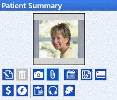
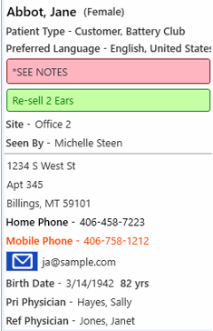
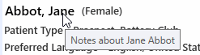
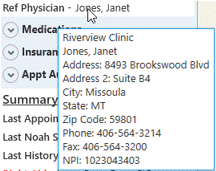
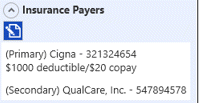
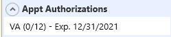
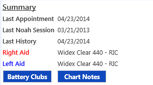
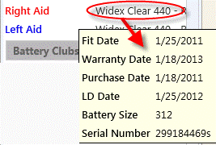
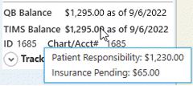
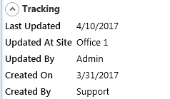

Patient Summary Panel
The Patient Summary panel is available on the appointments, history, hearing aid history, communications and claims pages.
Click on a patient name in the patient list to display the information for that patient in the Patient Summary panel.

Patient Summary Icons
 Edit Patient - click to edit the patient's details
Edit Patient - click to edit the patient's details Delete Patient - A patient can only be deleted after they have been made Inactive. Deleting will permanently remove the patient and associated activity from the database
Delete Patient - A patient can only be deleted after they have been made Inactive. Deleting will permanently remove the patient and associated activity from the database Take Patient Photo. If the computer equipped with a web camera, click Take Patient Photo to acquire a picture of the patient. If a picture has already been obtained, it will display at the top of the Summary Panel.
Take Patient Photo. If the computer equipped with a web camera, click Take Patient Photo to acquire a picture of the patient. If a picture has already been obtained, it will display at the top of the Summary Panel. Attach Document to Patient
Attach Document to Patient Display Appointment History for this Patient. All appointments are displayed by default, but a date range can be entered to show the desired list. The list can be printed by clicking the Print button. Click on a column heading to sort by that criteria.
Display Appointment History for this Patient. All appointments are displayed by default, but a date range can be entered to show the desired list. The list can be printed by clicking the Print button. Click on a column heading to sort by that criteria. Reports/Letters/Captioned Telephone forms for selected Patient
Reports/Letters/Captioned Telephone forms for selected Patient Financing - CareCredit™ or AllWell™
Financing - CareCredit™ or AllWell™  Patient Point of Sale
Patient Point of Sale View Transaction Summary of the patient's Accounts Receivable balance, and print a statement.
View Transaction Summary of the patient's Accounts Receivable balance, and print a statement. Add Task for this Patient
Add Task for this Patient Add Patient Communication Interaction
Add Patient Communication Interaction  New in version 6.07. Have a two-way text conversation with the patient. (Practice must be replicated and enrolled in Automated Appointment Notification service. Contact TIMS Support at 800-763-0308 for more information.)
New in version 6.07. Have a two-way text conversation with the patient. (Practice must be replicated and enrolled in Automated Appointment Notification service. Contact TIMS Support at 800-763-0308 for more information.)
Demographic Information

- Patient Type(s) can be edited by clicking the Edit icon.
- Preferred Language can be edited by clicking the Edit icon.
- Missing Required Fields - specific fields can be set as required in Practice setup, and it can also be configured that a new patient can be initially saved without filling all the required data (in case it is unavailable at that time). If that is the case, the patient summary will display "Missing required fields" in pink.

- Communication Restrictions are highlighted in pink.
- Opportunity Status is highlighted in green. (if patient is an opportunity)
- The primary phone number will be highlighted in red.
- If an email address for the patient has been entered, click on the
 button to send an email. If the practice is enrolled in Automated Appointment Notification service, you will have a choice to send the email via TIMS Email Service or your default email program.
button to send an email. If the practice is enrolled in Automated Appointment Notification service, you will have a choice to send the email via TIMS Email Service or your default email program. 
- If using the TIMS Email Service, the Send Patient Message screen will popup with the Email Only box checked. The email address will default to what has been entered in patient details, but can be changed if necessary. Enter an Email Subject.

- Type the message to be sent, or access a Scripted Note by right-clicking on the Message field. Scripted notes must first be setup under the Communications note type to be available here. See Scripted Notes setup.

- Click the Send button. A confirmation message will popup. Click Yes to send the email, or No to cancel.

- Emails sent through TIMS Email Service will be archived and displayed in the Patient Activity panel under Communication Interactions.
- Demographic information and birth date can be edited by clicking the Edit icon.
- Hover cursor over patient name in Patient Summary to view a tooltip of patient notes entered.

- Hover cursor over Primary or Referring Physician name to view a tooltip of physician details.

QR Code
- New in version 6.07 - Mobile Upload to Patient
- Click on the arrow to hide or display the QR Code
 for the patient. See Attaching Documents to a Patient Record for details.
for the patient. See Attaching Documents to a Patient Record for details.
Medications
- Click on the arrow to hide or display Medications Information

- Click on the prescriptions icon
 to edit medication information.
to edit medication information. - See Medications help for more information
Insurance Information
- Click on the arrow to hide or display Insurance Information

- Click on the Edit icon to edit insurance information.
- Insurance payers are listed when insurance information is displayed.
- See Insurance Coverage help for more information
Appt Authorizations (if enabled)
- Click on the arrow to hide or display active Appointment Authorizations.

- Authorizations cannot be edited here, only viewed. Click the Edit Patient icon click to edit or add authorizations in the patient's details.
Summary

- Date of last appointment, NOAH Session and history information is listed. New in version 6.07 - hover the cursor over the Last History date to view a tooltip of the patient's last audiogram.

- Right hearing aid information is identified in red.
- Left hearing aid information is identified in blue.
- Click Battery Clubs button to view established battery clubs. New battery clubs are set up in the hearing aid history.
- Click the Chart Notes button to view all chart notes, audiograms and tympanograms for selected patient.
- Hover the cursor over the name of the hearing aid model to view a tool tip with additional hearing aid information.

- QuickBooks (if syncing) and TIMS balances are displayed. QuickBooks balance will be displayed in red if the date is over 1 day ago. Hover the cursor over the TIMS balance to see a tooltip of the portions that are patient responsibility and insurance pending.

- Patient ID is assigned when new patient record is created. If one has been entered, the patient Chart/Account Number will also be displayed.
Tracking
- Tracking information can be displayed or hidden by clicking the arrow button. Included will be:

- Last Updated date, site, and user
- Created date and user